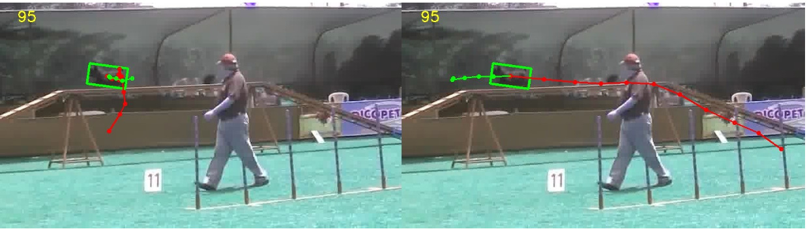

All Publications
Bad Weather | Nighttime
Human Analysis
Human Centric Vision
Below are selected papers in human analysis. For the complete
publication list, see: all publications.
Graph and Temporal Convolutional Networks for 3D Multi-person Pose Estimation in Monocular Videos
[PDF]
Cheng Yu, Bo Wang, Bo Yang, Robby T. Tan
AAAI Conference on Artificial Intelligence, AAAI 2021.
Multi-Scale Networks for 3D Human Pose Estimation with Inference Stage Optimization
[
PDF]
Cheng Yu, Bo Wang, Bo Yang, Robby T. Tan
Submitted to IEEE Transactions on Pattern Analysis and Machine
Intelligence, TPAMI, 2020.

Object Tracking using Spatio-Temporal Networks for Future Prediction Location
[
PDF]
Yuan Liu, Ruoteng Li, Yu Cheng, Robby T. Tan, X. Sui
European Conference in Computer Vision (ECCV), 2020
3D Human Pose Estimation using Spatio-Temporal Networks with Explicit Occlusion Training
[
PDF]
Cheng Yu, Bo Yang, Bo Wang, Robby T. Tan
AAAI Conference on Artificial Intelligence, AAAI 2020.
Occlusion-Aware Networks for 3D Human Pose Estimation in
Video
[PDF]
Cheng Yu, Bo Yang, Bo Wang, Wending Yan, Robby T. Tan
International Conference on Computer Vision, ICCV 2019
Loss Guided Activation for Action Recognition in
Still Images
[
PDF]
Lu Liu, Robby T. Tan, Shaodi You
Asian Conference on Computer Vision, ACCV 2018.
Understanding image concepts using ISTOP model
[
PDF ]
M.S. Zarchi, Robby T. Tan, C. van Gemeren, A. Monadjemi,
R.C. Veltkamp
Pattern Recognition, May 2016
Dyadic Interaction Detection from Pose and Flow
[
PDF ]
Coert van Gemeren, Robby Tan, Ronald Poppe and Remco Veltkamp
International Workshop on Human Behavior Understanding, in
conjunction with European Conference on Computer Vision (ECCV)
2014.
Human body orientation estimation using a committee based approach
[
PDF ]
Manuela Ichim, Robby Tan, Nico van de Aa and Remco Veltkamp
in proceedings of International Joint Conference on Computer
Vision, Imaging and Computer Graphics Theory and Applications,
2014, Lisbon, Portugal
Hidden conditional random fields for action
recognition
[
PDF]
Lifang Chen, Nico van de Aa, Robby Tan and Remco Veltkamp
in proceedings of International Joint Conference on Computer
Vision, Imaging and Computer Graphics Theory and Applications,
2014,
Lisbon, Portugal
Utrecht-Multi-Person-Motion Benchmark: a multi-person dataset
with synchronized video and motion capture data for evaluation
of articulated human motion and interaction
[
PDF |
URL:
http://www.projects.science.uu.nl/umpm/
]
Nico Van Der Aa, Geert-Jan Giezeman, Xinghan Luo, Robby T. Tan, Remco Veltkamp
IEEE Workshop on Human Interaction in Computer Vision (HICV2011)
In conjunction with ICCV 2011, Barcelona,
2011.
Multi-person Tracking Based on Vertical Reference Lines and Dynamic Visibility Analysis
[
PDF ]
X. Luo, Robby T. Tan and R. Veltkamp
IEEE International Conference on Image Processing, ICIP, 2011
September 2011, Brussel, Belgium.
Utrecht Multi-Person Motion (UMPM) Benchmark
[
PDF
]
N.P. van der Aa, X. Luo, G.J. Giezeman, Robby T. Tan, and R.C. Veltkamp
Utrecht university technical report, UU-CS-2011-027, 2011
Human Pose Estimation for Multiple Persons based on Volume Reconstruction
[
PDF ]
X. Luo, Robby T. Tan and R. Veltkamp
In the Proceedingss of IEEE International Conference on Pattern Recognition, ICPR, 2010.
Istanbul,
Turkey.